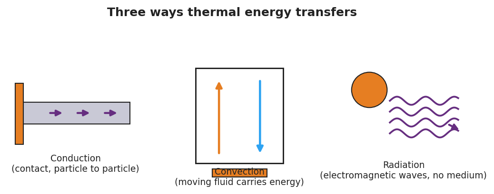

Emperor penguins survive −40 °C winters by packing into a tight huddle and slowly rotating, so the warm birds in the center and the freezing birds on the edge keep trading places. Meanwhile, on your desk, an ice cube is melting in a cup of warm water — the drink cools and the ice warms until both reach one temperature.

Which way does thermal energy move when a hot thing and a cold thing meet — and where do they end up?
Watch the penguin huddle and the ice in your warm drink. Write two things you notice and two things you wonder.
Sketch the warm water and the ice cube the instant they meet. Use arrows to show which way thermal energy flows. Predict the final temperature: closer to the ice, closer to the warm water, or in between?
Set a starting temperature for a hot block and a cold block, then press Touch & release to put them in contact. Watch the two temperatures change over time. Which one drops? Which one climbs? Do they cross, or do they meet and stop?
Equilibrium temperature (equal-size blocks): 50 °C. Energy always flows from the hot block to the cold block until both are equal — never the other way on its own.
"Thermal energy flows from the ___ object to the ___ object until they reach ___."
Expand this kernel sentence using all three Hochman conjunctions:
"Thermal energy flows from the hot water into the ice because ____, but ____, so ____."
Use the second law to explain in one sentence why the penguin huddle keeps the whole group alive.